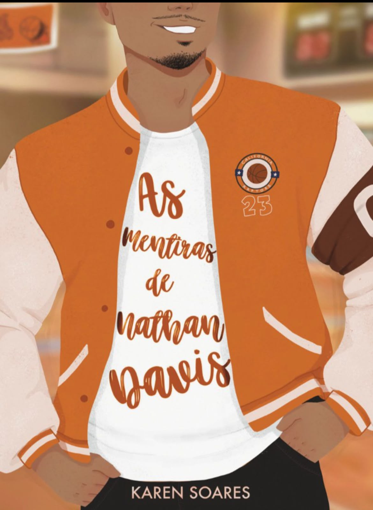

Alérgica a Casamento
Fake Dating
Estranhos para Amantes
Cidade Pequena
Uma comédia romântica com fake dating, cidade pequena, um boy swifitie e dois desconhecidos que acabam se apaixonando.
Comprar na Amazon

Parte de Mim
Enemies to Lovers
Hóquei
Grumpy x Sunshine
Um romance universitário de hóquei com enemies to lovers, rivalidade de infância e sentimentos que nunca desapareceram.
Comprar na Amazon

As Mentiras de Nathan Davis
Fake Dating
Basquete
Grumpy x Sunshine
Fake dating, basquete universitário e uma jornalista que precisa ajudar o atleta que mais odeia.
Comprar na Amazon
Cada Dia Que Te Amei
Friends to Lovers
Slow Burn
Found Family
Friends to lovers, slow burn e um bad boy tatuado que pode mudar a vida da garota mais tímida da universidade.
Comprar na Amazon